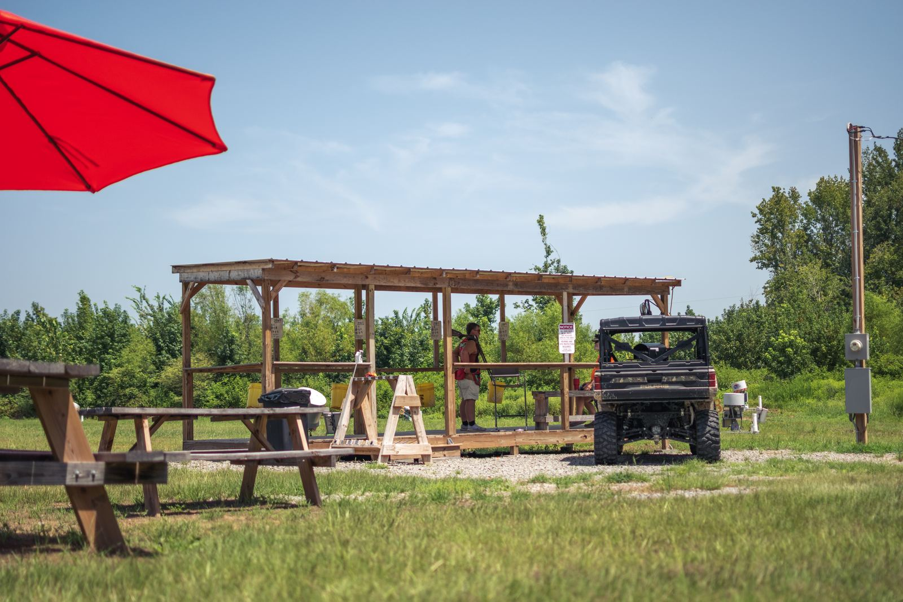
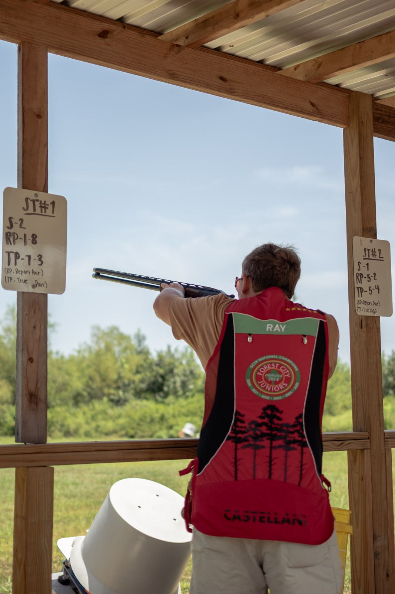
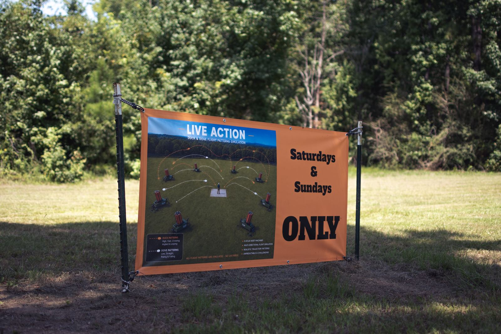
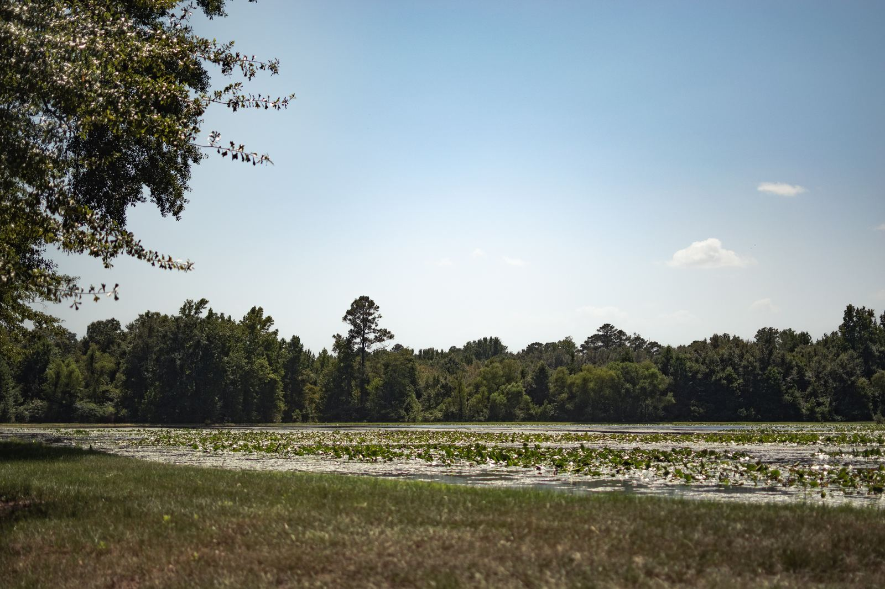

Pull.Break more clays.
Trap, skeet, and our Live Action duck and dove simulation, out in the open air off Seed Town Road. Open to the public Saturdays and Sundays, and to members through the week. Bring your own shotgun — we sell the shells.
At a glance
- Open
- Sat 9–5 · Sun 9–4
- Weekdays
- Members only
- Live Action
- Duck & dove simulation
- Stands
- Live Action · Trap · Skeet
- Phone
- (205) 821-4879
Three stands, one weekend
Same shotgun, same clay target. What changes is where it comes from and how hard it is trying to fool you.
Live Action
Duck and dove flight patterns thrown by eight Atlas machines firing multi-directionally, so no two targets come from the same place. Duck runs high, fast, crossing, angled and looping; dove comes low and straight, rising and falling. Unpredictable on purpose — and every pattern is simulated, with no live birds.
Trap
Targets thrown away from you from a single house. The most forgiving place to start, and the one where a new shooter breaks their first clay soonest.
Skeet
Crossing targets at known angles, thrown the same way every round. Repeatable by design, which makes it the stand to come back to when you want to actually get better.
Bring a shotgun that works and that fits you. Ammunition, snacks and cold drinks are sold at the clubhouse, so the shells are the one thing you can leave at home.
Start here, not on YouTube
Tell us at the stand that it is your first time. Somebody will go over gun handling, how the machines throw, and what the station menus mean before you shoot anything.
Bring your own shotgun and closed-toe shoes and a hat with a brim. Eye and ear protection is required past the stand — the posted notice is not a suggestion. Shells are for sale at the clubhouse.
What a first visit looks like
- Check in at the stand and say it is your first time.
- Eye and ear protection on before you step up.
- Action stays open until you are on the station.
- A walk-through of how the station menu reads.
- Then you shoot — and somebody stays with you for the first few.
Eye and ear protection is required for everyone in the shooting area, watchers included.
Where you will be standing
Off Seed Town Road in Fosters, twenty-odd minutes southwest of Tuscaloosa.



